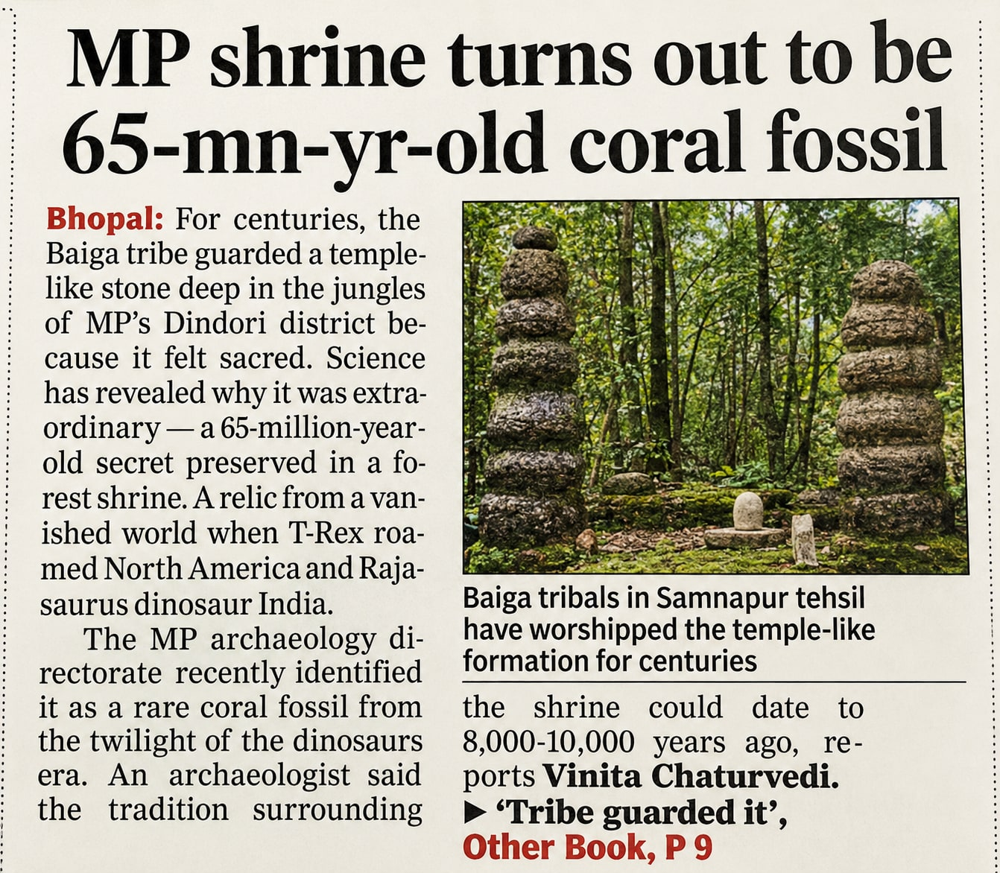
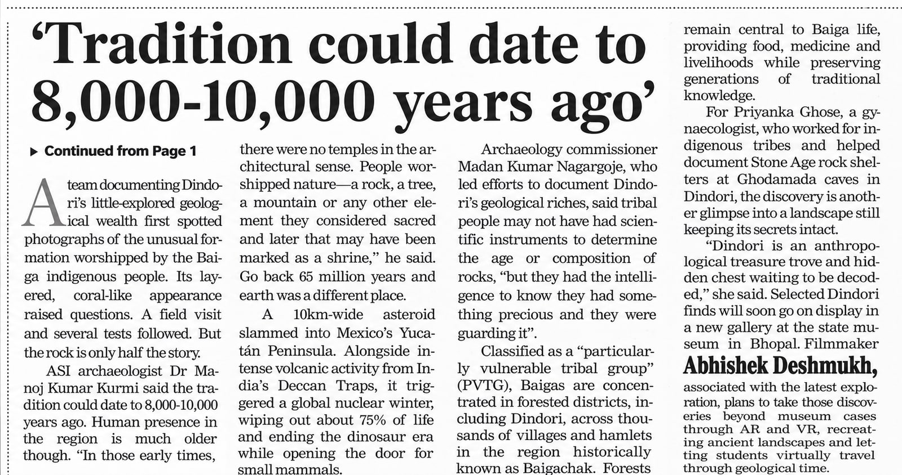

MP shrine turns out to be a 65-million-year-old coral fossil
Dindori’s Baiga discovery is headed for the State Museum in Bhopal — and into AR and VR

Baiga tribals in Samnapur tehsil have worshipped the temple-like formation for centuries. Report by Vinita Chaturvedi, The Times of India.
Bhopal: For centuries, the Baiga tribe guarded a temple-like stone
deep in the jungles of Madhya Pradesh’s Dindori district, simply because it felt sacred. Science has
now revealed why it was extraordinary — a 65-million-year-old secret preserved in a forest
shrine.
The MP archaeology directorate recently identified the formation as a rare coral fossil
from the twilight of the dinosaur era — a relic of a vanished world, from the time when T-Rex roamed
North America and Rajasaurus roamed India.
A team documenting Dindori’s little-explored geological wealth first spotted photographs of the
unusual formation worshipped by the Baiga. Its layered, coral-like appearance raised questions. A field
visit and several tests followed. But the rock, it turns out, is only half the story.
ASI archaeologist Dr Manoj Kumar Kurmi said the tradition surrounding the shrine could
itself date back 8,000–10,000 years — and human presence in the region is much
older still.
In those early times, there were no temples in the architectural sense. People worshipped nature — a rock, a tree, a mountain or any other element they considered sacred — and later that may have been marked as a shrine.
— Dr Manoj Kumar Kurmi
Archaeologist, Archaeological Survey of
India
Go back 65 million years and earth was a different place. A 10km-wide asteroid slammed into Mexico’s Yucatán Peninsula. Alongside intense volcanic activity from India’s Deccan Traps, it triggered a global nuclear winter, wiping out about 75% of life and ending the dinosaur era — while opening the door for small mammals.
Tribal people may not have had scientific instruments to determine the age or composition of rocks, but they had the intelligence to know they had something precious — and they were guarding it.
— Madan Kumar Nagargoje
Archaeology Commissioner, Madhya
Pradesh
Classified as a “particularly vulnerable tribal group” (PVTG), the Baigas are concentrated in
forested districts including Dindori, across thousands of villages and hamlets in the region historically
known as Baigachak. Forests remain central to Baiga life — providing food, medicine
and livelihoods while preserving generations of traditional knowledge.
For Priyanka Ghose, a gynaecologist who has worked with indigenous tribes and helped
document Stone Age rock shelters at the Ghodamada caves in Dindori, the discovery is another glimpse into a
landscape still keeping its secrets intact.
Dindori is an anthropological treasure trove and a hidden chest waiting to be decoded.
— Priyanka Ghose
Gynaecologist; documented the Ghodamada
rock shelters, Dindori

The report, continued: ‘Tradition could date to 8,000–10,000 years ago’.
From museum case to immersive experience
Selected Dindori finds will soon go on display in a new gallery at the State Museum in Bhopal. Filmmaker Abhishek Deshmukh, associated with the latest exploration, plans to take those discoveries beyond museum cases through AR and VR — recreating ancient landscapes and letting students virtually travel through geological time.
A 65-Million-Year Secret
A rare coral fossil from the twilight of the dinosaur era, hidden in plain sight in a forest shrine.
Guarded by the Baiga
Worshipped for centuries in Samnapur tehsil, in the forested region historically known as Baigachak.
New Bhopal Gallery
Selected Dindori finds head to a new gallery at the State Museum in Bhopal.
Travel Through Time
AR and VR will recreate ancient landscapes so students can walk through geological time.
Source: ‘Tribal people knew what they had and guarded it,
says Madhya Pradesh archaeology official’ by Vinita Chaturvedi, The Times of India, Bhopal.
Read the full report on timesofindia.indiatimes.com